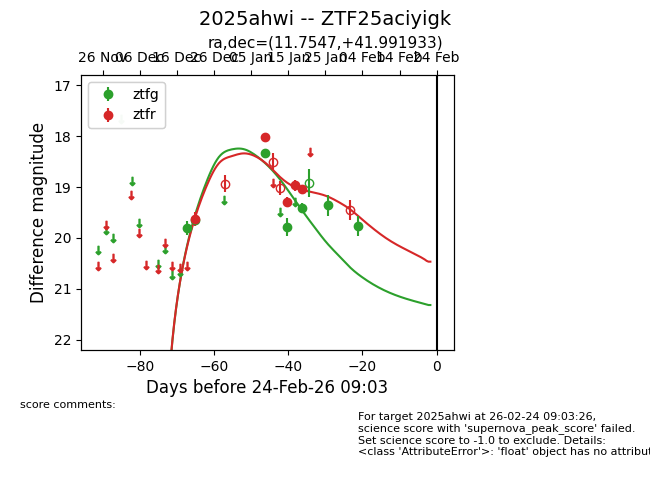
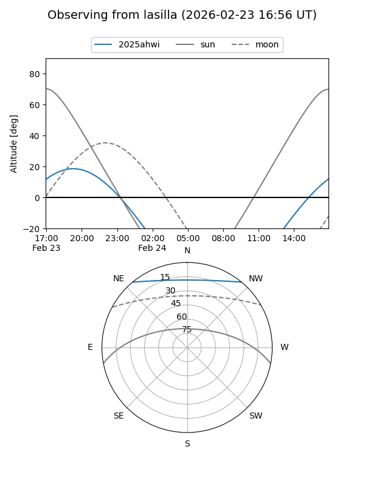
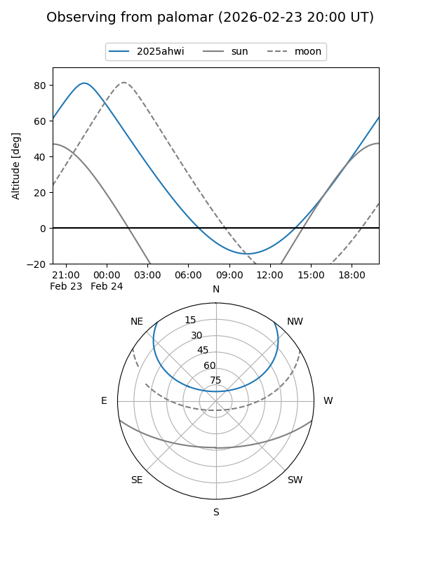
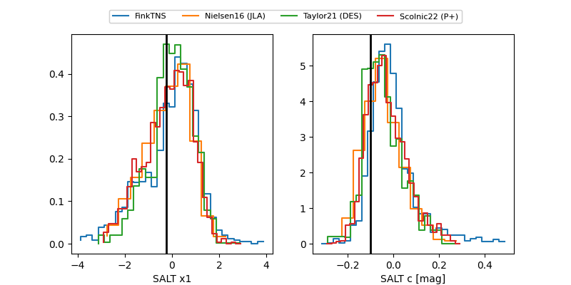

2025ahwi
Target 2025ahwi at 2025-12-30 19:38
Aliases and brokers:
FINK: fink-portal.org/ZTF25aciyigk
Lasair: lasair-ztf.lsst.ac.uk/objects/ZTF25aciyigk
ALeRCE: alerce.online/object/ZTF25aciyigk
TNS: wis-tns.org/object/2025ahwi
YSE: ziggy.ucolick.org/yse/transient_detail/2025ahwi
alt names
ZTF25aciyigk (ztf,fink_ztf)
2025ahwi (tns,yse)
Coordinates:
equatorial (ra, dec) = 11.7547,+41.99193
equatorial (HMS+DMS) = 00:47:01.14,+41:59:30.96
galactic (l, b) = (122.0532,-20.87227)
Flags:
Photometry:
last ztfg=19.65, ztfr=19.63
2 ztfg, 1 ztfr detections
Lightcurve

Visibility


Additional plots
